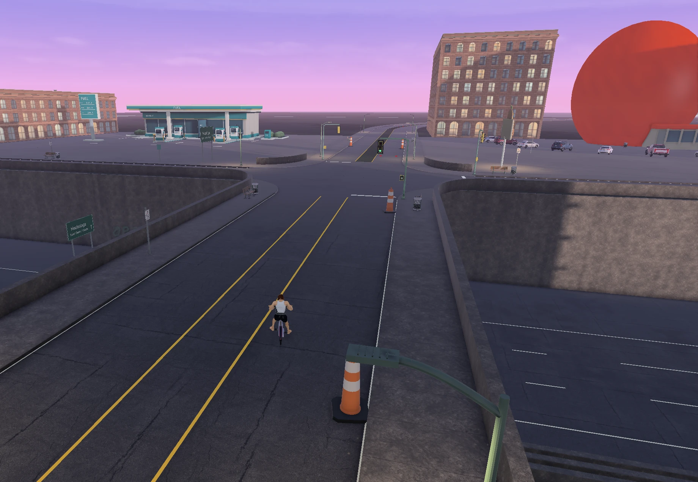
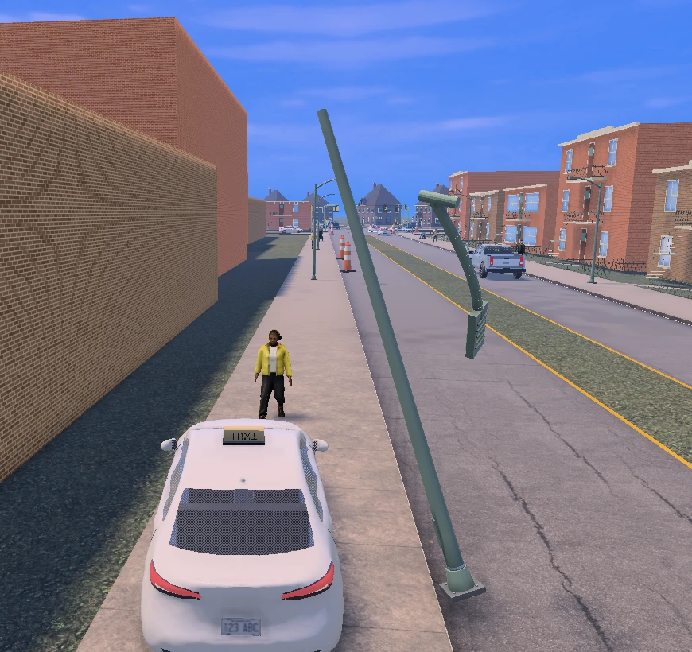
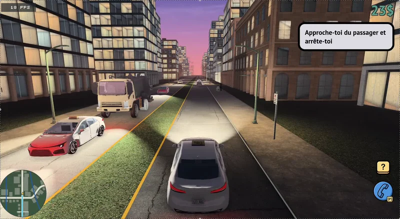
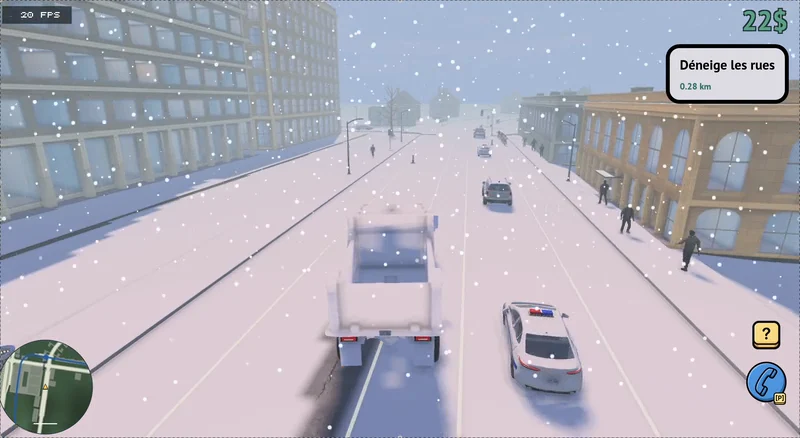
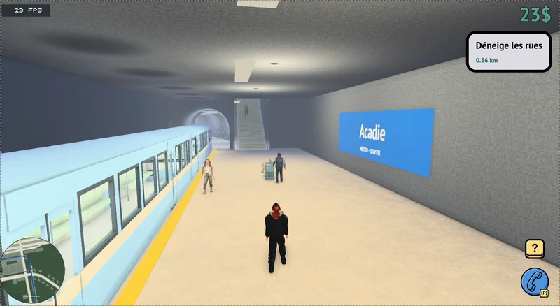

MTL Jobines
Conduis un taxi, un autobus ou une déneigeuse dans les rues de Montréal.
Jouer dans le navigateurLes plex



Taxi
Prends un client à bord et conduis-le à destination.

Déneigement
Déneige le boulevard pendant que la neige tombe encore.

Station Acadie
Gare ton auto et prends le métro.
Jouer dans le navigateur